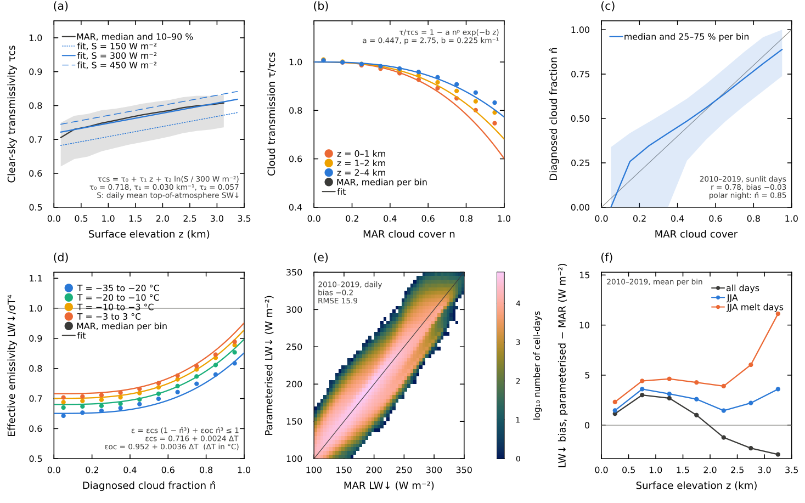

Energy Balance
go_energy_flux! solves the temperature profile of the snow/firn column and the optional ice substrate below it with one implicit conductive step and a linearized surface energy balance. The surface temperature Tsrf is the temperature of the snow–air interface; it carries no heat capacity of its own (Robin boundary). The formulas below follow src/processes/energy_flux.jl and src/processes/surface_fluxes.jl.
For daily forcing, the default Diurnal Shortwave Cycle subdivides a forcing step before this energy solve is applied.
Surface Flux Parameterization
At the surface, the model combines absorbed shortwave radiation, longwave radiation, sensible heat exchange, and precipitation / latent-heat terms into the surface energy balance $Q(T_s) = Q_{sw} + Q_{lw} + Q_{sh} + Q_{p} + Q_{lh}$. The terms are linearized about the previous surface temperature,
\[Q(T_s) \approx Q_{\mathrm{const}} - Q_{\mathrm{lin}} T_s,\]
and stored as surface_flux_constant and surface_flux_linear.
Robin Surface Boundary
The interface temperature balances the surface energy balance against the conductive flux into the first layer,
\[Q(T_s) = G_s\,(T_s - T_1), \qquad G_s = \frac{2K_1}{\Delta z_1},\]
where $T_1$, $K_1$ and $\Delta z_1$ are the temperature, conductivity and thickness of the first layer (its centre lies $\Delta z_1/2$ below the surface). Solving for the interface temperature,
\[T_s = \frac{Q_{\mathrm{const}} + G_s T_1}{Q_{\mathrm{lin}} + G_s},\]
and eliminating it leaves the first layer as a regular finite-volume cell,
\[c_i m_1 \frac{\partial T_1}{\partial t} = G_s\,(T_s - T_1) + G_{3/2}\,(T_2 - T_1),\]
so the surface forcing enters only the top row of the implicit tridiagonal system. A thin top layer therefore responds quickly without an artificial surface heat capacity.
BESSIModel uses turbulent_flux_scheme=:semix by default for sensible and latent heat. Set turbulent_flux_scheme=:bessi to recover the BESSI bulk formulation. This choice is independent of seb_scheme, which defaults to :semix for consistent graybody longwave exchange, including incident absorption. Set seb_scheme=:bessi for the legacy longwave treatment. Prescribed q_sh or q_lh forcing always takes precedence over either parameterization.
Shortwave Radiation
If q_sw_net is not prescribed, absorbed shortwave is
\[Q_{sw} = (1-\alpha)\,Q_{\mathrm{sw,down}},\]
where $\alpha$ is the already diagnosed surface albedo stored in albedo[idx].
Longwave Radiation
If q_lw_down is not prescribed, the default longwave_scheme=:cloud_proxy derives it once per daily forcing step as $q_{\mathrm{lw,down}} = \epsilon_a\,\sigma T_{\mathrm{air}}^4$. The effective emissivity weights a clear-sky and an overcast emissivity by a cloud fraction $n$ (Konzelmann et al., 1994),
\[\epsilon_a = \epsilon_{cs}(T_{\mathrm{air}})\,(1 - n^q) + \epsilon_{oc}(T_{\mathrm{air}})\,n^q, \qquad \epsilon_{cs/oc} = \epsilon_{cs/oc,0} + \epsilon_{cs/oc,T}\,(T_{\mathrm{air}} - T_0),\]
and is limited to $0.4 \le \epsilon_a \le 1$ (lw_emissivity_max). The cloud fraction is diagnosed from the daily shortwave transmissivity $\tau = Q_{\mathrm{sw,down}}/Q_{\mathrm{sw,TOA}}$ by inverting the cloud transmission $\tau/\tau_{cs} = 1 - a\,n^p e^{-b z}$, with the clear-sky transmissivity $\tau_{cs} = \tau_0 + \tau_z z + \tau_S \ln(Q_{\mathrm{sw,TOA}}/300\,\mathrm{W\,m^{-2}})$ (at most one; clear_sky_transmissivity(c, z, Q_sw_TOA)). All coefficients were fitted to daily MAR over the Greenland ice sheet (1980–1989) with examples/research/fit_cloud_proxy_longwave.jl: $\tau_0 = 0.718$, $\tau_z = 0.0298\,\mathrm{km^{-1}}$, $\tau_S = 0.0569$, $a = 0.447$, $p = 2.75$, $b = 0.225\,\mathrm{km^{-1}}$, $\epsilon_{cs,0} = 0.716$, $\epsilon_{cs,T} = 0.00239\,\mathrm{K^{-1}}$, $\epsilon_{oc,0} = 0.952$, $\epsilon_{oc,T} = 0.00362\,\mathrm{K^{-1}}$, and $q = 3$. The daily-mean top-of-atmosphere insolation $Q_{\mathrm{sw,TOA}}$ is computed from latitude and solar declination with a solar constant of 1361 W m⁻² and the eccentricity factor $1 + 0.033\cos(2\pi d/365)$ for day of year $d$. In the polar night ($Q_{\mathrm{sw,TOA}} \le 50$ W m⁻²), for sub-daily forcing whose shortwave is not a daily mean (dt_days < 0.75), and for forcing without latitude, $n$ is the constant lw_night_cloud_fraction (0.85). Without a surface height the sea-level coefficients are used. No forcing beyond the standard shortwave is needed.

Fit of the cloud-proxy longwave to daily MAR over the Greenland ice sheet. (a) Clear-sky shortwave transmissivity against elevation (MAR median and 10–90 % range, 1980–1989) and the fit for daily-mean insolation of 150, 300 and 450 W m⁻². (b) Cloud transmission $\tau/\tau_{cs}$ against MAR cloud cover for three elevation bands. (c) Diagnosed cloud fraction against MAR cloud cover, 2010–2019 (r = 0.78). (d) Effective emissivity of MAR against the diagnosed cloud fraction for four air-temperature classes and the fit. (e) Daily downwelling longwave of Chion against MAR, 2010–2019 (bias −0.2 W m⁻², RMSE 15.9 W m⁻²). (f) Bias against elevation for summer, summer melt days and the annual mean.
The longwave is computed once per forcing interval and held fixed across the diurnal substeps. The defaults are fitted for Greenland. The Antarctic set used for the paper runs (lw_clear_sky_emissivity=0.7314, lw_clear_sky_emissivity_temperature_slope=0.003378, lw_overcast_emissivity=0.9877, lw_overcast_emissivity_temperature_slope=0.004171, lw_cloud_emissivity_exponent=2.0, lw_night_cloud_fraction=0.9) is listed as comments in the Antarctic example configurations.
longwave_scheme=:graybody uses the constant $\epsilon_{\mathrm{air}}$ (ϵ_air, 0.8) instead:
\[Q_{\mathrm{lw}} = \epsilon_{\mathrm{snow}}\sigma\left(\epsilon_{\mathrm{air}} T_{\mathrm{air}}^{4} - T_{s}^{4}\right).\]
The emitted longwave term is nonlinear in surface temperature, so the solver linearizes it about the previous-step temperature $T_s^n$:
\[(T_s^{n+1})^4 \approx 4(T_s^n)^3T_s^{n+1}-3(T_s^n)^4.\]
This gives the implemented constant and linear parts
\[Q_{\mathrm{lw,const}} = \epsilon_{\mathrm{s}}\left( q_{\mathrm{lw,down}} + 3\sigma(T_s^n)^4 \right), \qquad Q_{\mathrm{lw,lin}} = 4\sigma\epsilon_{\mathrm{s}}(T_s^n)^3,\]
where $q_{\mathrm{lw,down}}$ is the prescribed, cloud-proxy or graybody incident longwave and $\epsilon_{\mathrm{s}}$ is the surface emissivity: ϵ_snow (0.98) over snow and eps_ice (0.98) over bare ice. Only outgoing longwave is linearized. The energy diagnostics record the nonlinear flux at the resolved surface temperature. seb_scheme=:bessi (legacy BESSI) absorbs the incident longwave completely (no $\epsilon_s$ factor on $q_{\mathrm{lw,down}}$) and uses ϵ_snow for emission over snow and bare ice alike.
Sensible Heat
If q_sh is not prescribed, the default SEMIX scheme follows the bulk-aerodynamic formulation of PALADYN (Willeit and Ganopolski, 2016) as used in SEMIX (Willeit et al., 2024). The neutral transfer coefficient at the reference height $z = 10$ m is
\[C_H^0 = \frac{\kappa^2}{\ln(z/z_{0m})\,\ln(z/z_{0h})},\]
with $\kappa = 0.4$, the momentum roughness semix_z0m_snow ($10^{-3}$ m) or semix_z0m_ice ($10^{-2}$ m) over bare ice, and $z_{0h} = z_{0m}/$ semix_zm_to_zh (10). Stability enters through the bulk Richardson number and the aerodynamic resistance,
\[Ri_B = \frac{g z (T_{\mathrm{air}}-T_s)}{T_{\mathrm{air}}\,\tilde u^2}, \qquad r_a = \left(C_H^0 f_{\mathrm{stab}}\,\tilde u\right)^{-1}, \qquad f_{\mathrm{stab}} = \begin{cases} \sqrt{1-16\,Ri_B}, & Ri_B<0,\\ (1+b\,Ri_B)^{-1}, & Ri_B\geq0, \end{cases}\]
with $\tilde u = \max(u, 0.1\,\mathrm{m\,s^{-1}})$ and $b$ = semix_stable_coefficient (40). Turbulent exchange is therefore suppressed under the stable conditions that prevail over melting and cold ice-sheet surfaces. The sensible heat flux is
\[Q_{\mathrm{sh}} = f_H\,\frac{\rho_{\mathrm{air}}c_{p,\mathrm{air}}}{r_a} (T_{\mathrm{air}}-T_s), \qquad \rho_{\mathrm{air}} = \frac{p}{R_d T_{\mathrm{air}}},\]
with $R_d = 287.05$ J kg⁻¹ K⁻¹ and the exchange factor $f_H$ = semix_sensible_exchange_factor (3.0, calibrated against MAR over Greenland; 2.5 for the Antarctic set). $r_a$ is evaluated at the surface temperature of the previous step and held fixed in the implicit solve. Without wind or pressure forcing, $u = 5$ m s⁻¹ and $p$ follows from the surface height with the barometric formula (or 101 325 Pa).
With turbulent_flux_scheme=:bessi, the code instead uses
\[Q_{\mathrm{sh}}= D_{\mathrm{sh}}(T_{\mathrm{air}}-T_{s}),\]
with default $D_{\mathrm{sh}} = 10\,\mathrm{W\,m^{-2}\,K^{-1}}$. In the linearized form,
\[Q_{\mathrm{sh,const}} = D_{\mathrm{sh}}T_{\mathrm{air}}, \qquad Q_{\mathrm{sh,lin}} = D_{\mathrm{sh}}.\]
Precipitation And Latent-Heat Terms
Snowfall and rain heat terms are directly diagnosed from the forcing rates in kg m^-2 s^-1.
For snowfall,
\[H_{\mathrm{snow}} = P_{\mathrm{snow}} c_i, \qquad K_{\mathrm{snow}} = P_{\mathrm{snow}} c_i T_{\mathrm{air}},\]
so the snowfall contribution can be written as
\[Q_{\mathrm{snow}}(T_s) = K_{\mathrm{snow}} - H_{\mathrm{snow}}T_s = P_{\mathrm{snow}} c_i (T_{\mathrm{air}} - T_s).\]
For rainfall onto snow (or, with the ice substrate, onto bare ice), the current implementation uses a temperature-independent term: rain enters at the melting point and releases the heat it carries above $T_0$,
\[Q_{\mathrm{rain}} = P_{\mathrm{rain}} c_w (T_{\mathrm{air}} - T_0).\]
If q_lh is prescribed, the code treats it as an additional turbulent latent heat flux. It is added to these snowfall/rain heat-term diagnoses rather than replacing them. If q_lh is not prescribed and relative humidity is available, the default SEMIX parameterization diagnoses humidity exchange using the same stability-corrected aerodynamic resistance as sensible heat:
\[Q_{\mathrm{vap}} = f_E\,\frac{L(T_s)\,\rho_{\mathrm{air}}}{r_a}(q_{\mathrm{air}}-q_s), \qquad q_{\mathrm{air}} = 0.622\,RH\,\frac{e_{\mathrm{sat,i}}(T_{\mathrm{air}})}{p}, \qquad q_s = 0.622\,\frac{e_{\mathrm{sat,i}}(T_s)}{p},\]
with $f_E$ = semix_latent_exchange_factor (1.0) and the saturation vapour pressure over ice $e_{\mathrm{sat,i}}(T) = 611.2\,\mathrm{Pa}\,\exp\!\left(22.46\,\frac{T-T_0}{T-T_0+272.62\,\mathrm{K}}\right)$. The latent heat follows the surface phase: $L = L_v + L_m$ (sublimation) for a subfreezing surface and $L = L_v$ (evaporation) at the melting point. With turbulent_flux_scheme=:bessi, Chion instead uses the vapor-pressure parameterization of Rolstad and Oerlemans (2005) and Zolles and Born (2021)
\[Q_{\mathrm{vap}} = \frac{D_{\mathrm{lf}}}{p_{\mathrm{air}}} \left(RH\,e_{\mathrm{sat,w}}(T_{\mathrm{air}}) - e_{\mathrm{sat,i}}(T_s)\right),\]
with
\[D_{\mathrm{lf}} = r\,\frac{D_{\mathrm{sh}}}{c_{p,\mathrm{air}}}\,0.622\,L(T_s),\]
where the air vapour pressure is computed over water, $e_{\mathrm{sat,w}}(T) = 611.2\,\mathrm{Pa}\,\exp\!\left(17.27\,\frac{T-T_0}{T-T_0+243.12\,\mathrm{K}}\right)$. Here $r$ is latent_heat_flux_ratio, defaulting to 1.0. In both schemes the saturation vapor pressure over ice is linearized about the previous surface temperature for the implicit surface solve, and $L$ is evaluated at that temperature. Bare ice without a substrate always uses $L_v + L_m$.
The latent heat flux is accompanied by a mass exchange with the atmosphere. In the SEMIX scheme and for prescribed q_lh, the vapour mass flux is $Q_{\mathrm{vap}}/L(T_s)$. The BESSI scheme computes it directly from the vapour-pressure gradient. After the energy solve, a subfreezing surface exchanges solid mass of the uppermost layer (sublimation and deposition), and a surface at the melting point exchanges liquid water (evaporation and condensation). Sublimation is limited to the mass available in the surface layer. relative_humidity may be supplied either as a fraction (0.0 to 1.0) or as percent (0.0 to 100.0). If neither q_lh nor relative humidity is available, the turbulent latent heat term is zero.
When both snowfall and rainfall are positive, the snowfall branch takes precedence in _diagnose_latent_heat_flux_coefficients.
Combined Linearized Surface Forcing
Collecting the terms used by the implementation gives
\[Q_{\mathrm{const}} = Q_{sw} + Q_{\mathrm{lw,const}} + Q_{\mathrm{sh,const}} + K_{\mathrm{snow/rain/latent}}, \qquad Q_{\mathrm{lin}} = Q_{\mathrm{lw,lin}} + Q_{\mathrm{sh,lin}} + H_{\mathrm{snow/latent}}.\]
Surface Energy Balance Diagnostics
The resolved surface energy balance is accumulated in the state as time integrals in W m⁻² day (positive into the surface), so that dividing by the elapsed days gives a mean flux: shortwave_down_sum, shortwave_net_sum, longwave_down_sum, longwave_net_sum (nonlinear, at the resolved $T_s$), sensible_heat_flux_sum (at the resolved $T_s$), rain_heat_flux_sum (only in steps without snowfall) and latent_heat_flux_sum. They are diagnostics only and do not feed back on the solution. The :monthly output group writes them as monthly means in W m⁻² (see Running Experiments).
Diffusion
The vertical diffusion equation is
\[c_i \rho \frac{\partial T}{\partial t} = \frac{\partial}{\partial z}\!\left( K(\rho, T)\,\frac{\partial T}{\partial z} \right),\]
where $\rho$ is the layer density and only the solid mass contributes to the heat capacity.
Thermal Conductivity
The conductivity follows Calonne et al. (2019), Eq. (5). It blends regressions for snow and firn and scales them with the temperature dependence of the conductivities of ice and air,
\[K(\rho,T) = \left[1-f(\rho)\right]S_{\mathrm{snow}}(T)\,K_{\mathrm{snow}}(\rho) + f(\rho)\,S_{\mathrm{firn}}(T)\,K_{\mathrm{firn}}(\rho), \qquad f(\rho) = \frac{1}{1+\exp[-0.04\,(\rho-450)]},\]
with $\rho$ in kg m⁻³, $T$ in K and $K$ in W m⁻¹ K⁻¹,
\[\begin{aligned} K_{\mathrm{snow}}(\rho) &= 0.024-1.23\times10^{-4}\rho+2.5\times10^{-6}\rho^2,\\ K_{\mathrm{firn}}(\rho) &= 2.107+3.618\times10^{-3}(\rho-\rho_{\mathrm{ice}}),\\ S_{\mathrm{snow}}(T) &= \frac{K_{\mathrm{ice}}(T)\,K_{\mathrm{air}}(T)}{2.107\times0.024}, \qquad S_{\mathrm{firn}}(T) = \frac{K_{\mathrm{ice}}(T)}{2.107},\\ K_{\mathrm{ice}}(T) &= 9.828\,e^{-5.7\times10^{-3}T}, \qquad K_{\mathrm{air}}(T) = 2.334\times10^{-3}\,\frac{T^{3/2}}{164.54+T}. \end{aligned}\]
The constants are fixed in the code. There is no user-facing ice conductivity parameter.
Interface Conductance
For each layer, the code first computes the layer thickness from the layer's solid mass $m_i$ and density $\rho_i$ (not the ice density):
\[\Delta z_i = \frac{m_i}{\rho_i}.\]
For the interface between neighboring layers $i$ and $i+1$, the helper interface_conductance computes
\[G_{i+1/2} = \left( \frac{\Delta z_i}{2K_i} + \frac{\Delta z_{i+1}}{2K_{i+1}} \right)^{-1} = \frac{2K_iK_{i+1}} {K_{i+1}\Delta z_i + K_i\Delta z_{i+1}}.\]
and we have
\[\beta_i = -\frac{\Delta t}{c_i m_i},\]
so the off-diagonal coefficients are proportional to $\beta_i G_{i\pm1/2}$.
Ice Substrate
With ice_substrate_layers > 0 (default 5), the solve continues below the snow/firn layers into a fixed-geometry layer of glacier ice. Substrate layer $k$ has density $\rho_i$ and thickness $\Delta z_k = 2^{k-1}\,\Delta z_{\mathrm{top}}$ with ice_substrate_top_thickness_m $= \Delta z_{\mathrm{top}}$ (default 0.05 m, 1.55 m in total for five layers). Its temperatures are stored in state.ice_temperature and are solved in the same tridiagonal system as the snow, with the usual interface conductance between the deepest snow layer and the top of the substrate. The base of the substrate is insulated.
When a column has no snow, the top substrate layer forms the surface and the same Robin boundary applies, with ice emissivity and roughness. Bare ice therefore cools when the surface energy balance is negative and has to be re-warmed to the melting point before it melts. Melt and rain on bare ice run off. With ice_substrate_layers=0, bare ice is instead held at the melting point and only positive surface energy is used.
Discrete System
For interior layers, the implemented stencil can still be understood in the usual tridiagonal form
\[a_i T_{i-1}^{n+1} + b_i T_i^{n+1} + c_i T_{i+1}^{n+1} = r_i,\]
with coefficients assembled from the layer masses, conductivities, and thicknesses. The surface row additionally includes the eliminated Robin boundary term, while the bottom row (the deepest snow layer or the base of the ice substrate) only sees conductive exchange with the layer above.
The multi-layer system is solved with the Thomas algorithm, eliminating from the bottom row upward. This leaves, for every row below the surface, a relation $T_i = p_i + q_i T_{i-1}$ that does not involve the surface boundary condition. Only the surface row differs between a free and a melting surface, so it is closed last as a single scalar equation for $T_1$, and the profile follows from one downward substitution.
Melt-Point Constraint
If the interface temperature from the free (Robin) surface row exceeds T0, the code:
- marks the step as needing melt
- fixes the interface at $T_s = T_0$ and closes the surface row again, keeping the conduction from the surface into the first layer, $G_s (T_0 - T_1)$. Rows below the surface are reused from the single upward elimination, so this gives the same profile as a second full solve of the system with the Dirichlet surface row.
- clamps the final profile to
T <= T0 - returns the remaining surface energy as melt energy,
\[E_{\mathrm{melt}} = \max\!\left(0,\; \left[Q_{\mathrm{const}} - Q_{\mathrm{lin}} T_0 - G_s (T_0 - T_1)\right]\Delta t \right).\]
The energy that warms the snow below a melting surface is thus conducted into the column instead of being melted, and no conductive flux leaves an above-melting-point surface.
API
Chion.go_energy_flux! — Function
go_energy_flux!(state, idx, air_temperature, shortwave_down, latent_heat_linear_coefficient, latent_heat_constant_term, dt_seconds; scratch, q_sw_net=nothing, q_lw_down=nothing, q_sh=nothing, q_lh=nothing)Public wrapper for the column energy-flux solve on state. Reuses scratch for temporary arrays and returns the same diagnostic named tuple as _go_energy_flux_resolved!.
Chion._go_energy_flux_resolved! — Function
_go_energy_flux_resolved!(..., scratch, air_temperature, shortwave_down, latent_heat_linear_coefficient_eff, latent_heat_constant_term_eff, dt_seconds, use_q_sw_net, q_sw_net_value, use_q_lw_down, q_lw_down_value, use_q_sh, q_sh_value, use_q_lh, q_lh_value, ..., ice_temperature, n_ice, ice_top_thickness)Advance the temperature profile of column idx over one time step by solving the surface energy balance and vertical heat diffusion problem. Mutates temperature and surface-temperature state in-place and returns a named tuple of energy diagnostics, including melt availability. With n_ice > 0 the optional ice substrate is solved below the snow/firn layers in the same implicit system; without surface snow its top layer forms the (bare-ice) surface.